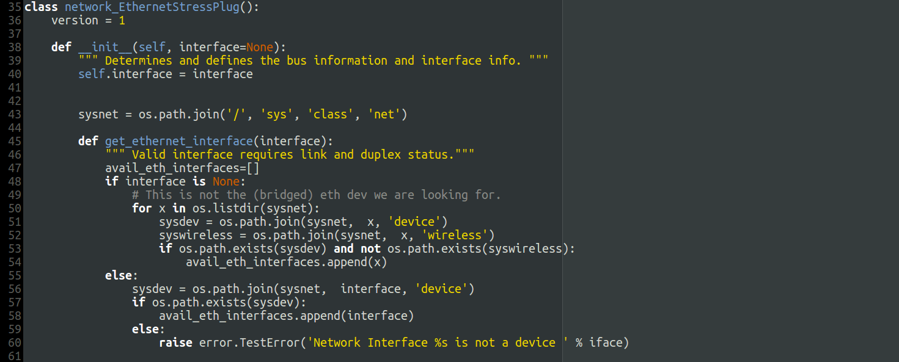

Building Android for Qemu
Tue 30 August 2016
During testing of power management patches for usb ethernet dongles, a script was needed to stress test connecting/disconnecting/reconnecting these devices.
Luckily a script like that already exists as a part of the chromiumos project, and can be found here.
That script does however not run standalone and requires a remote device (chromebook) to execute on. So I took the liberty of changing it to support local testing. The modified version can be found here.
This might come in handy for someone, if not, the script will at least be archived on this site.
Install dependencies
sudo apt install autoconf gcc-aarch64-linux-gnu libaio-dev libbluetooth-dev libbrlapi-dev libbz2-dev libcap-dev libcap-ng-dev libcurl4-gnutls-dev libepoxy-dev libfdt-dev libgbm-dev libgles2-mesa-dev libglib2.0-dev libibverbs-dev libjpeg8-dev liblzo2-dev libncurses5-dev libnuma-dev librbd-dev librdmacm-dev libsasl2-dev libsdl1.2-dev libsdl2-dev libseccomp-dev libsnappy-dev libssh2-1-dev libtool libusb-1.0-0 libusb-1.0-0-dev libvde-dev libvdeplug-dev libvte-2.90-dev libxen-dev valgrind xfslibs-dev xutils-dev zlib1g-dev
Set up paths
export PROJECT_PATH="/opt/qemu_android"
export QEMU_PATH="${PROJECT_PATH}/qemu"
export LINUX_PATH="${PROJECT_PATH}/linux-android"
export ANDROID_PATH="${PROJECT_PATH}/android"
export ANDROID_TOOLS_PATH="${PROJECT_PATH}/android-tools"
Virglrenderer
git clone git://git.freedesktop.org/git/virglrenderer
cd virglrenderer
./autogen.sh
make
sudo make install
cd ..
Qemu
git clone git://git.qemu-project.org/qemu.git $QEMU_PATH
mkdir $QEMU_PATH/build
cd $QEMU_PATH/build
../configure --target-list=aarch64-softmmu,x86_64-softmmu --enable-gtk --with-gtkabi=3.0 --enable-kvm
make -j
cd ../..
Linux kernel
git clone http://git.linaro.org/people/rob.herring/linux.git $LINUX_PATH
cd $LINUX_PATH
git checkout android-4.4
make ARCH=arm64 CROSS_COMPILE=aarch64-linux-gnu- ranchu_defconfig
make ARCH=arm64 CROSS_COMPILE=aarch64-linux-gnu- -j
cd ..
Android
mkdir $ANDROID_PATH
cd $ANDROID_PATH
repo init -u https://android.googlesource.com/platform/manifest -b master
git clone https://github.com/robherring/android_manifest.git -b android-6.0 local_manifests
cd ..
repo sync -j
cd device/linaro/generic
make defconfig
make all
cd ../../..
source build/envsetup.sh
# Select linaro_arm64-userdebug or linaro_x86_64-userdebug
lunch
make -j
cd ..
mkbootimg
git clone https://android.googlesource.com/platform/system/core.git $ANDROID_TOOLS_PATH
$ANDROID_TOOLS_PATH/mkbootimg/mkbootimg --kernel $LINUX_PATH/arch/arm64/boot/Image --ramdisk $ANDROID_PATH/out/target/product/linaro_arm64/ramdisk.img --output boot-db410c.img --dt dt.img --pagesize 2048 --base 0x80000000 --cmdline 'rw console=ttyMSM0,115200n8'
Run Qemu machine
1 2 3 4 5 6 7 8 9 10 11 12 13 14 15 16 17 18 19 20 21 22 23 24 25 26 27 28 29 30 31 32 33 34 35 36 37 38 39 40 41 42 43 44 45 46 47 48 49 50 51 52 53 54 55 56 57 58 59 60 61 62 63 64 65 66 67 68 | #!/bin/bash
set -e
PATH="$ANDROID_PATH/out/host/linux-x86/bin/:$PATH"
ARCH="arm64"
QEMU_ARCH=$ARCH
case "$ARCH" in
arm)
QEMU_OPTS="-cpu cortex-a15 -machine type=virt"
KERNEL_CMDLINE='console=ttyAMA0,38400 earlycon=pl011,0x09000000 debug nosmp drm.debug=0 rootwait androidboot.selinux=permissive'
KERNEL=/home/rob/proj/git/linux-2.6/.build-arm/arch/arm/boot/zImage
;;
arm64)
QEMU_ARCH="aarch64"
QEMU_OPTS="-cpu cortex-a57 -machine type=virt"
KERNEL_CMDLINE='console=ttyAMA0,38400 earlycon=pl011,0x09000000 nosmp drm.debug=0 rootwait rootdelay=5 androidboot.selinux=permissive'
KERNEL=/home/rob/proj/git/linux-2.6/.build-arm64/arch/arm64/boot/Image
;;
x86_64)
KERNEL=/home/padovan/p/linux-trees/linux/arch/x86/boot/bzImage
QEMU_OPTS="-enable-kvm -smp 2"
KERNEL_CMDLINE='console=tty0 console=ttyS0 debug drm.debug=0 androidboot.selinux=permissive'
;;
x86)
QEMU_ARCH="x86_64"
KERNEL=/home/padovan/p/linux-trees/linux/arch/x86/boot/bzImage
QEMU_OPTS="-enable-kvm -smp 2"
KERNEL_CMDLINE='console=tty0 console=ttyS0 debug drm.debug=0 androidboot.selinux=permissive'
;;
esac
ANDROID_IMAGE_PATH=/home/padovan/p/aosp/out/target/product/linaro_${ARCH}
if [ ! -f system_${ARCH}.raw -o ${ANDROID_IMAGE_PATH}/system.img -nt system_${ARCH}.raw ]; then
simg2img ${ANDROID_IMAGE_PATH}/system.img system_${ARCH}.raw
fi
if [ ! -f cache_${ARCH}.raw -o ${ANDROID_IMAGE_PATH}/cache.img -nt cache_${ARCH}.raw ]; then
simg2img ${ANDROID_IMAGE_PATH}/cache.img cache_${ARCH}.raw
fi
if [ ! -f userdata_${ARCH}.raw -o ${ANDROID_IMAGE_PATH}/userdata.img -nt userdata_${ARCH}.raw ]; then
simg2img ${ANDROID_IMAGE_PATH}/userdata.img userdata_${ARCH}.raw
fi
/home/padovan/p/qemu/${QEMU_ARCH}-softmmu/qemu-system-${QEMU_ARCH} \
${QEMU_OPTS} \
-append "${KERNEL_CMDLINE}" \
-m 1024 \
-serial mon:stdio \
-kernel $KERNEL \
-initrd ${ANDROID_IMAGE_PATH}/ramdisk.img \
-drive index=0,if=none,id=system,file=system_${ARCH}.raw \
-device virtio-blk-pci,drive=system \
-drive index=1,if=none,id=cache,file=cache_${ARCH}.raw \
-device virtio-blk-pci,drive=cache \
-drive index=2,if=none,id=userdata,file=userdata_${ARCH}.raw \
-device virtio-blk-pci,drive=userdata \
-netdev user,id=mynet,hostfwd=tcp::5550-:5555 -device virtio-net-pci,netdev=mynet \
-device virtio-gpu-pci,virgl -display gtk,gl=on \
-device virtio-mouse-pci -device virtio-keyboard-pci \
-device nec-usb-xhci,id=xhci \
-device sdhci-pci \
-d guest_errors \
-nodefaults \
$*
|